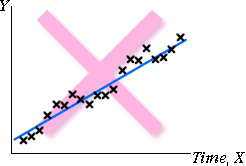

Linearity In some data sets, the response mean does not change linearly with X. The relationship is then called nonlinear. In the diagram on the right, the response levels off as X increases, so a normal linear model is not appropriate. |
 |
Constant standard deviation Sometimes the response standard deviation is different for different values of X. In the diagram on the right, the variability of the response is higher at large values of X. |
 |
Normal distribution for errors Sometimes distribution of the response (at any value of X) is skew or differs in shape from a normal distribution in other ways. In the diagram on the right, the response has a skew distribution with occasional very large values. |
 |
Independent errors All observations (and hence all errors) are assumed to be independently obtained. When the observations are ordered in time, successive errors may be correlated, with big values tending to be followed by others big values, etc. This is most commonly seen when the explanatory variable is time — i.e. when using a linear model to fit the trend in a time series. In the diagram on the right, crosses on one side of the least sqrs line are often followed by other crosses on the same side. |
 |